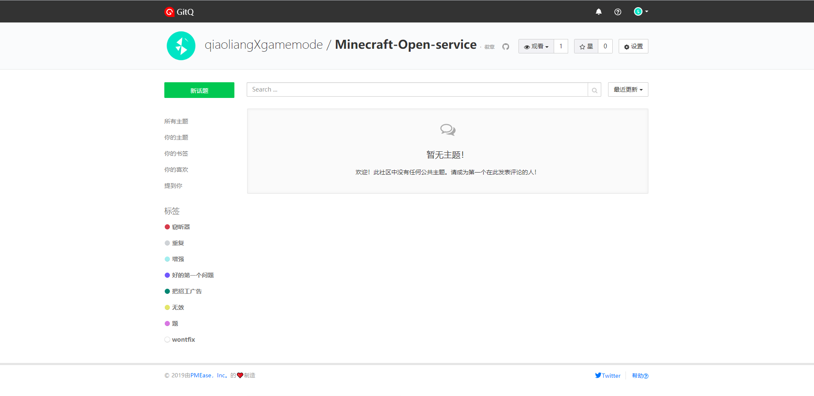
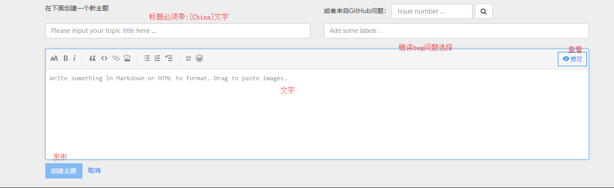

hello!
你好!
Here is Minecraft Open service Erroneous collection Solve
这里是我的世界开服器错误收集解决
第一个问题:编码不符合无法启动开服:
First question: unable to start service:
步骤:点击打开>找到start文件>用记事本打开start.bat文件>在里面保存一次系统会使用系统的编码保存。
Step: Click Open > Find Start File > Open Start.bat File with Notepad > Save the system once in it and save it using the system code.
小提醒:空格文件夹无法启动的哦~
Small Indent: the blank folder will not be able to start oh~
显示Downloading original jar...
Patching original jar...是在加载
showDownloading original jar...
Patching original jar...It's loading.
咋回事很正常啊?
What's the matter?
解决办法:找到start文件>打开eula.txt文件>看到eula=false修改成eula=true重新启动就可!
Solution: find the start File > open the eula.txt file > see EULA = false modified to EULA = true restart!
更多问题在:讨论论坛讨论
Problem discussion
中国用户不会英语进入论坛画面（不是官方论坛）
 中国用户不用担心只需要带上[China]就知道是中国用户了!
Chinese users don't have to worry about bringing China to know that they are Chinese users!
中国用户当然也可以选择谷歌翻译!
Of course, Chinese users can also choose Google Translator!
核心搜索地址中国:MC百科
核心搜索地址中国:mcbbs
Core search address foreign:papermc
核心搜索地址:papermc